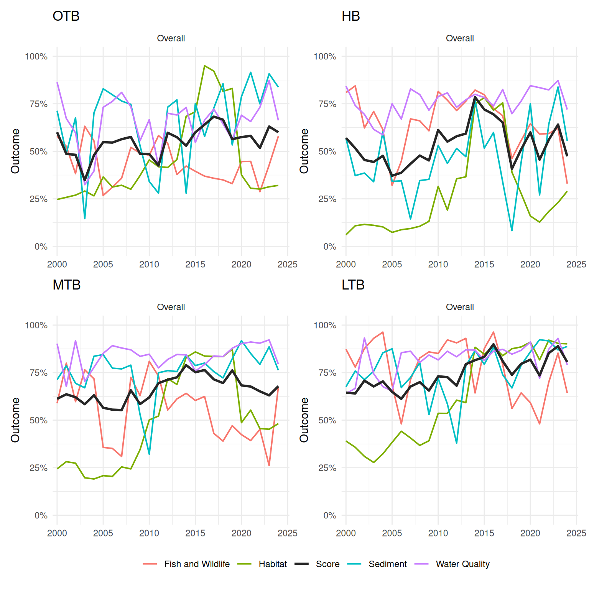
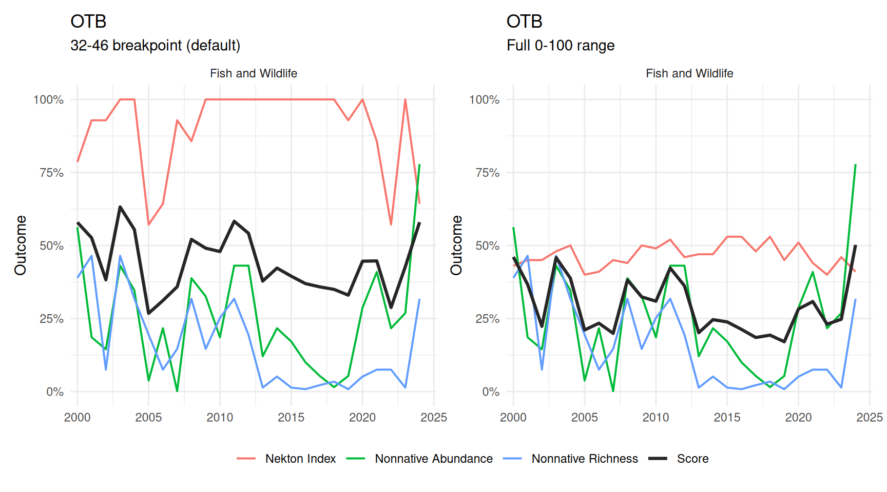
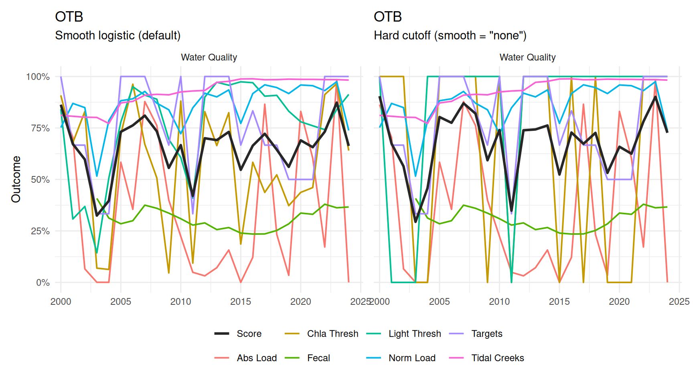
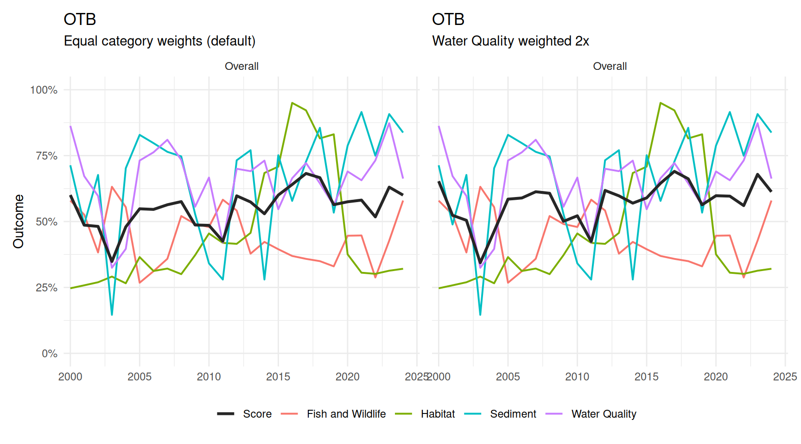

bay_segments <- c('OTB', 'HB', 'MTB', 'LTB')
wqattain <- anlz_wq_attain(epcdata)
wqthresh <- anlz_wq_thresh(epcdata)
totanndat <- util_rdataload("https://github.com/tbep-tech/load-estimates/raw/main/data/totanndat.RData")
wqload <- anlz_wq_load(totanndat)
wqtidalcreeks <- anlz_wq_tidalcreeks(tidalcreeks, iwrraw, yrs = 1990:2024)
wqfib <- anlz_wq_fib(enterodata)
peltel <- anlz_sed_peltel(sedimentdata, yrs = 1993:2024)
tbbi <- anlz_sed_tbbi(benthicdata)
tbni <- anlz_fw_tbni(fimdata)
nonnative_obs <- anlz_fw_nonnative_obs()
nonnative_abundance <- anlz_fw_nonnative_abundance(nonnative_obs)
nonnative_richness <- anlz_fw_nonnative_richness(nonnative_obs)
trnsct <- anlz_hab_seagrass_transect(transect)
cov <- anlz_hab_seagrass_coverage(sgsegest)
wqoverall <- anlz_category(
wq_attain = wqattain,
thresh = wqthresh,
load = wqload,
tidal_creeks = wqtidalcreeks,
fib = wqfib
)
sedoverall <- anlz_category(
sed_peltel = peltel,
sed_tbbi = tbbi
)
fwoverall <- anlz_category(
tbni = tbni,
nonnative_abundance = nonnative_abundance,
nonnative_richness = nonnative_richness
)
haboverall <- anlz_category(
seagrass_transect = trnsct,
seagrass_coverage = cov
)This article shows a comparison of report card results across bay segments and how scoring decisions can change the results. Please see the Report Card Scoring article for more information on the methods.
Setup
Indicators and category scores are built the same way as in Report Card Scoring, for the four default bay segments (OTB, HB, MTB, LTB).
Comparing Bay Segments
Trends
The plot below shows each bay segment’s overall score from 2000-2024. Only the overall scores by category are shown (water quality, sediment, fish & wildlife, habitat).
plots <- lapply(bay_segments, function(seg) {
plot_trend(
wqoverall, sedoverall, fwoverall, haboverall, bay_segment = seg,
yr_range = c(2000, 2024), facets = 'Overall', text = 'legend'
)
})
patchwork::wrap_plots(plots, ncol = 2) +
patchwork::plot_layout(guides = 'collect', axes = 'collect') &
theme(legend.position = 'bottom')
2024 Snapshot by Bay Segment
The plots below show the 2024 outcome for each bay segment, including the overall score, scores by category, and individual indicator scores within each category. Color ranges are the same across plots for visual comparison of score ranges.
plot_score(wqoverall, sedoverall, fwoverall, haboverall, bay_segment = 'OTB', yr = 2024)
plot_score(wqoverall, sedoverall, fwoverall, haboverall, bay_segment = 'HB', yr = 2024)
plot_score(wqoverall, sedoverall, fwoverall, haboverall, bay_segment = 'MTB', yr = 2024)
plot_score(wqoverall, sedoverall, fwoverall, haboverall, bay_segment = 'LTB', yr = 2024)How Scoring Decisions Affect Results
The following demonstrates a few examples of how scoring decisions can affect the results. This is not a comprehensive demonstration, rather the intent is to provide a general overview of the sensitivity of the method to different decisions that can be made by the analyst. All examples use results from OTB.
Nekton Index: Breakpoint Window vs. Full Range
anlz_fw_tbni() defaults to rescaling the Nekton Index’s 0-100 score over its own 32-46 grade breakpoints (from = c(32, 46)). Passing from = c(0, 100) instead spreads sensitivity evenly across the full range rather than concentrating it near the breakpoints.
tbni_full <- anlz_fw_tbni(fimdata, from = c(0, 100))
fwoverall_full <- anlz_category(
tbni = tbni_full,
nonnative_abundance = nonnative_abundance,
nonnative_richness = nonnative_richness
)
p1 <- plot_trend(
wqoverall, sedoverall, fwoverall, haboverall, bay_segment = 'OTB',
facets = 'fw', text = 'legend', yr_range = c(2000, 2024)
) +
labs(subtitle = '32-46 breakpoint (default)')
p2 <- plot_trend(
wqoverall, sedoverall, fwoverall_full, haboverall, bay_segment = 'OTB',
facets = 'fw', text = 'legend', yr_range = c(2000, 2024)
) +
labs(subtitle = 'Full 0-100 range')
patchwork::wrap_plots(p1, p2, ncol = 2) +
patchwork::plot_layout(guides = 'collect', axes = 'collect') &
theme(legend.position = 'bottom')
Threshold Scoring: Smooth vs. Hard Cutoff
The anlz_wq_thresh() and anlz_wq_load() indicators are scored against a threshold (chlorophyll/light attenuation and total/normalized nutrient loading) and both default to a smooth logistic transition at their threshold (smooth = 'logistic'). smooth = 'none' instead uses a hard 0/1 cutoff, as described in Report Card Scoring. The other three water quality indicators (wq_attain, tidal_creeks, fib) are continuous rather than threshold-based and are unaffected here.
Note the differences in Chla Thresh, Light Thresh, Abs Load, and Norm Load scores between the two plots, as well as the overall score.
wqthresh_hard <- anlz_wq_thresh(epcdata, smooth = 'none')
wqload_hard <- anlz_wq_load(totanndat, smooth = 'none')
wqoverall_hard <- anlz_category(
wq_attain = wqattain,
thresh = wqthresh_hard,
load = wqload_hard,
tidal_creeks = wqtidalcreeks,
fib = wqfib
)
p1 <- plot_trend(
wqoverall, sedoverall, fwoverall, haboverall, bay_segment = 'OTB',
facets = 'wq', text = 'legend', yr_range = c(2000, 2024)
) +
labs(subtitle = 'Smooth logistic (default)')
p2 <- plot_trend(
wqoverall_hard, sedoverall, fwoverall, haboverall, bay_segment = 'OTB',
facets = 'wq', text = 'legend', yr_range = c(2000, 2024)
) +
labs(subtitle = 'Hard cutoff (smooth = "none")')
patchwork::wrap_plots(p1, p2, ncol = 2) +
patchwork::plot_layout(guides = 'collect', axes = 'collect') &
theme(legend.position = 'bottom')
Category Weights
anlz_score()’s wt argument weights the four category scores when combining them into the overall score (default NULL, equal weight). Below, habitat is upweighted twice relative to the other three categories.
p1 <- plot_trend(
wqoverall, sedoverall, fwoverall, haboverall, bay_segment = 'OTB',
facets = 'Overall', text = 'legend', yr_range = c(2000, 2024)
) +
labs(subtitle = 'Equal category weights (default)')
p2 <- plot_trend(
wqoverall, sedoverall, fwoverall, haboverall, bay_segment = 'OTB',
facets = 'Overall', text = 'legend', yr_range = c(2000, 2024),
wt = c(wq = 1, sed = 1, fw = 1, hab = 2)
) +
labs(subtitle = 'Habitat weighted 2x')
patchwork::wrap_plots(p1, p2, ncol = 2) +
patchwork::plot_layout(guides = 'collect', axes = 'collect') &
theme(legend.position = 'bottom')